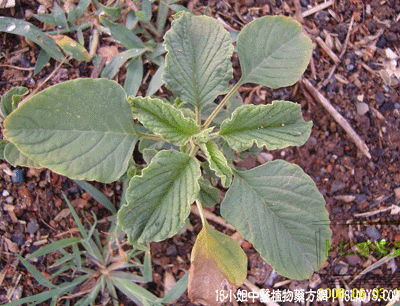

(本文解释权归中药材天地网兄弟站-18小姐中医植物药方网所有,如需转载请注明出处)
簕苋菜(中药材植物名:刺苋)(植物科目:苋科)

别名：假苋菜。
植物名：刺苋。
生长环境：本品为一年生，直立，分枝草本。生于荒地旷野或园地。为一年常见的野草。
分布：广东各地及我国南方各省均有分布。
入药部分：根。
采集期：夏、秋。
自采地点：荒地。
性味：性微寒、味甘淡。
功能：清大肠热。
主治、用量和用法：1、疴痢：生用2～4两，或干用1～2两，清水煎服，或加猪瘦肉同煎；2、疴血：用法同上；3、痔疮：干根1～2两，清水煎服并用叶煎水熏洗攻门；4、湿热肚痛：干根1～2两，清水煎服；5、小便刺痛用法同上。
（方歌）下痢疴血小便痛，湿热扭肚痔疮红，簕苋菜头煲瘦肉，诸症均疗治有功。
参考资料：《广州市中医验方选集节第一辑》一德卫生所以干簕苋菜头合剂，治红白痢处方：干簕苋菜头6钱、红铁树叶3块、铁树草5钱、火炭母8钱、扭肚藤1两、夜香牛5钱、木棉花3钱、水煎冲结糖服。
(本文解释权归中药材天地网兄弟站-18小姐中医植物药方网所有,如需转载请注明出处)